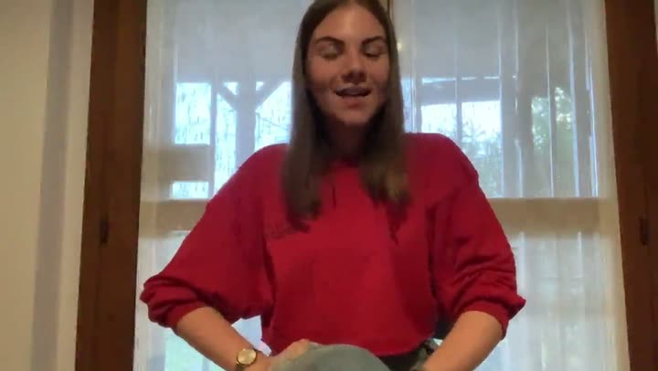
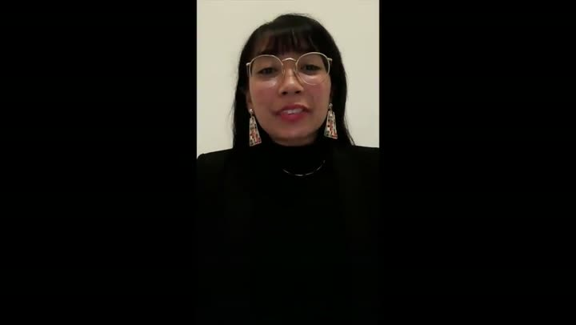
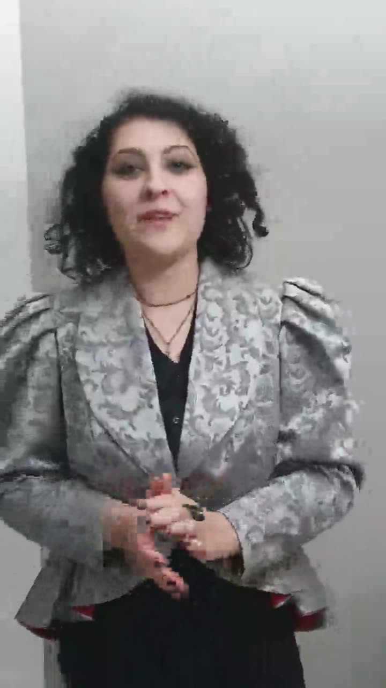
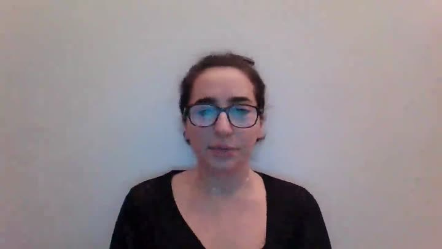
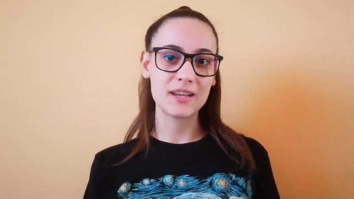
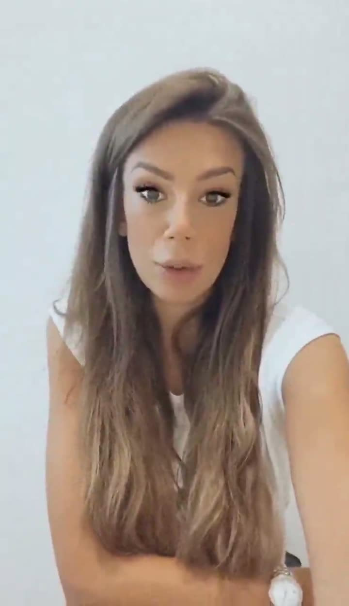

Lara
Intervista · 7 min 53Chi siamo
Le voci di studenti ed ex-studenti

Erika
Intervista · 1 min 14
Romchel
Intervista · 2 min 20Ylenia
Intervista · 3 min 49
Gloria
Intervista · 1 min 43Vera
Intervista · 2 min 07
Giulia
Intervista · 0 min 56
Michela
Intervista · 2 min 19
Lara
Intervista · 1 min 52